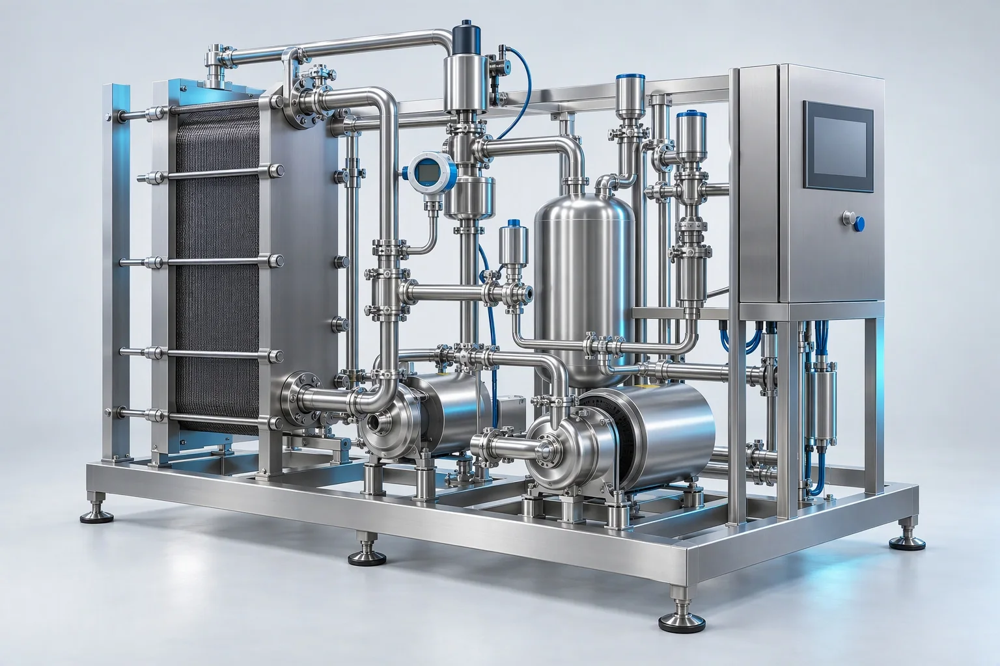
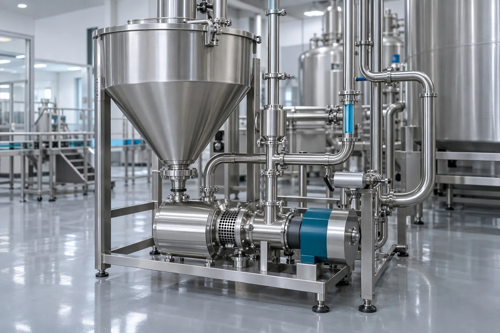

SK / 01ALPHA SKID
Thermal Core
Traitement compact, sections chaudes et froides, instrumentation et sécurisation intégrées.
Process thermique↗
Un parc modulaire inspiré des meilleurs codes de présentation industriels, avec une identité, des visuels et des architectures propres à ALPHA.

SK / 01Traitement compact, sections chaudes et froides, instrumentation et sécurisation intégrées.

MX / 02Incorporation de poudres, recirculation et mélange haute intensité au sein d’un module hygiénique.
Cuves isolées, agitation adaptée, statuts de lot et distribution vers les étapes aval.
 FL / 04
FL / 04Pompage, vannes hygiéniques, capteurs et distribution pensés comme une matrice lisible.
Sélectionnez un point de l’atelier pour comprendre les liens entre préparation, traitement, maturation, utilités et données.

Chaque module peut exister seul ou rejoindre une ligne complète.
Accès, drainabilité, nettoyabilité et séparation des flux dès la conception.
Instrumentation et données prévues pour la conduite, la qualité et la maintenance.
Architecture prête à intégrer recettes, capacité et services complémentaires.